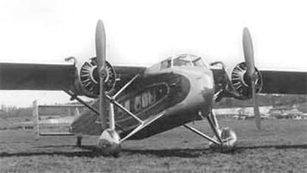

Прототип самолета Vickers Viastra Mk.I совершил свой первый полет 1 октября 1930 года. Это был десятиместный пассажирский самолет оснащенный тремя двигателями Armstrong Siddeley Lynx Major мощностью 270 л.с. После испытаний самолет значительно модернизировали, заменив три двигателя на два более мощных Bristol Jupiter XIF (520 л.с.) и расширив пассажирскую кабину еще на два места. В таком виде были выпущены два серийных Viastra Mk.II. Оба самолета были поставлены австралийской авиакомпании Western Australian Airways в 1931 году. Последний из австралийских Viastra был списан в 1936 года.
Вслед за первыми серийными самолетами, последовали несколько модификаций выполненных на заказ. Такими были Viastra Mk.VI с одним двигателем Jupiter XIF , и Viastra Mk.X, построенный специально по заказу Принца Уэльского, летавшего на нем до 1934 года.
| Летно технические характеристики | |
|---|---|
| Модификация | Viastra II |
| Размах крыла максимальный, м | 23.04 |
| Длина, м | 15.10 |
| Высота, м | 4.80 |
| Площадь крыла, м2 | |
| Масса, кг | |
| - пустого самолета | |
| - нормальная взлетная | 5820 |
| Тип двигателя | 2 ПД Bristol Jupiter XIF |
| Мощность, л.с. | 2 х 520 |
| Максимальная скорость у земли, км/ч | 248 |
| Практическая дальность, км | 1200 |
| Практический потолок, м | |
| Экипаж, чел | 3 |
| Полезная нагрузка:: | до 12 пассажиров |